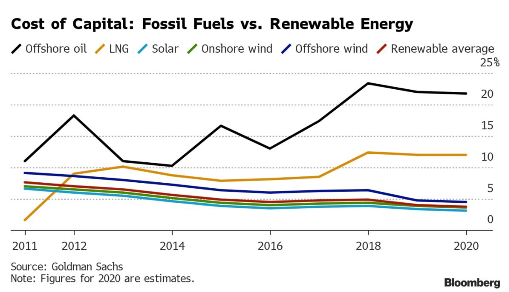

4 ESG investing
This section is dedicated to the roots of SRI: why do people (want to) invest ethically/durably, how do they do it, and does it work?
4.1 Investors
First, it is important to disentangle the two types of investors:
- retail investors: people like you and me who make individual savings or speculative decisions;
- institutional investors: large corporations that manage billions & billions of $/€ of money on behalf of (often) smaller clients; for instance: pension funds, mutual funds (in the US), insurance companies, banks, hedge funds, venture capital (VC) funds.
Often, retail investors have to resort to institutions to allocate their money to particular assets. Banks & funds have access to products that are not always available to the general public. It may be the case that asset managers have preferences similar to a “representative” agent (synthesis of all retail agents) - or not! The diversity in tastes is huge, hence a representative agent does not make much sense. Moreover, there are agency problems because the objectives of the money manager are not always aligned with those of its clients (e.g., incentives towards particular products).
4.1.1 Preferences
Socially responsible investing (SRI) will always be driven by two pillars:
- sustainability
- performance
The latter one can even be divided into two by splitting gains/benefits versus risk. The question is thus: where do investors (individually and collectively) position themselves with regard to these criteria?
There is also a subtlety: some investors may think that they can get performance by investing in durable assets! (i.e., have it both ways) In fact, many papers have been published that pretend that this is in fact very likely Actually, this is possible, in some cases (especially: during some particular periods in time).
Another reason why individuals may want to invest ethically is warm glow: it just feels better to do good.
The reasons underlying preferences are multiple. Knowledge or awareness of what is at stake matters (e.g., people who believe in global warming versus climate change deniers). Geography as well (the US are lagging Europe on the matter). Some studies even mention political orientation (e.g., in the US, Democrats are more inclined to invest durably), and even religiosity (not religion though - see Chapter 3 of PISEI)!
4.1.1.1 Macro data
There are several ways to try to understand, explain or reveal investor preferences (pertaining to sustainability). One of them is to track flows in (or total assets of) durable funds, like we saw with Morningstar reports.
This gives aggregate trends which are very useful. Much more sophisticated techniques can be found for instance in Flow-driven ESG returns and Do Investors Value Sustainability? A Natural Experiment Examining Ranking and Fund Flows. Basically, traditional finance tells us that simple orders should not shift the market. But there is mounting evidence that markets are more inelastic than previously thought and that even relatively small changes in positions can push prices up or down. This why analyzing flows is so important: because they may be a potent determinant of returns!
In an article called Impact investing, researchers in the US use a simple methodology. They regress some performance measure of Venture Capital (VC) funds, say a return \(R\) onto a dummy variable that codes if a fund is green or not and they include control variables, such as fund size, vintage, or geography. The model is as follows:
\[\large R=a+bD+cX+e,\] where \(D\) is the dummy, \(X\) the control variables and \(e\) the error term. When there are no control variables \(X\), the coefficient recovers the difference in return (or performance) between traditional and green funds. The results are as follows:
The important figures are at the top (the first row shows the estimation for \(b\) in the model Equation). The show that impact VC funds have lower returns (8 bps or ppts = 8 percentage points = 0.08%) compared to traditional funds. This is rather a small effect size. Impact funds in their study have several themes: environment, minorities & women (diversity), poverty, social infrastructure, SME funding, and regional development.
Using data from investors (Limited Partners), the authors derive what is called “willingness to pay” (WTP) for impact. They find that, ex-ante, investors tolerate a lower return of ~3bps when investing in impact funds. Note that this in fact corresponds to micro data… (see other options below)
Another way to evaluate the appetite for SRI is to resort internet search volume (e.g.: Google Trends).
4.1.1.2 Micro data
The micro approach to assessing preferences is to ask people, directly, locally. This can be done in surveys, or in studies and experiments. There are several questions that are interesting:
- First, the overall picture: is the broader public interested? Are people ready to sacrifice a bit of performance (how much?) to invest more ethically?
- Then, determinants: which population more particularly shifts assets to green ones (gender, age, wealth, education, etc.)
- Finally, but this is harder to measure: dynamics (are preferences evolving through time & ages?)
A few examples below.
Preferences for sustainable and responsible equity funds - A choice experiment with Swedish private investors. The characteristics of respondents is:
and they are then presented alternatives for investments:
An important feature is that in this case, preferences are stated directly, and not revealed. However, the authors conclude: “Investor decisions are driven by behavioral features rather than by demographic characteristics.”
Capturing preferences is very complex as the subtleties and dimensions are numerous. For example, investors may be more willing to avoid brown stocks than purchase green ones (asymmetry effect). Or they may be more interested in some pillars (E) than others (S,G).
In What Do You Think about Climate Finance?, the authors survey 861 finance academics, professionals, and public sector regulators and policy economists about climate finance topics. The main result:
Comment: the green rows pertain to climate concerns. Over the whole sample, respondents are quite concerned (69%), but Europe (77%) is more concerned than the US (67%). Importantly, the experts (who work in climate finance) are much more worried (78%) than those who don’t (56%).
Next, the authors have asked which types of risk matter the most for the short term (5 years) and for the long term (30 years):
Note: stakeholder risk pertains to changes in preferences of employees and customers.
Comment: in the short term, the perceived risks are mostly of regulatory type (compulsory disclosure, taxes). In the long term, physical risks (droughts, floods, hurricanes: all climate disasters that are likely to destroy facilities, cause casualties, prevent work, sales, etc.).
Lastly, the authors ask experts about the most effective ways to reduce carbon footprint.
Comment: coercion (via taxes) is n°1, though not for the private sector (of course!). The private sector prefers to put the pressure on institutional investors… Interesting leverage may come from governments & customers. Note the last option “Nothing will lead to change”! It receives zero votes, which underlines optimistic views.
Finally, a last illustration, focused on venture capital, taken from the academic article ESG Factor Integration into Private Equity:
Note: the sample size is not clear but likely quite small, hence we must take these results with a grain of salt. Moreover, they might be subject to some biases. Nevertheless, they do show that ESG integration is underway in the VC industry. Why?
4.1.2 The opposite view
\[\text{"Who cares if Miami is 6 feet under water in 100 years?"}\] \(\longrightarrow\) Stuart Kirk, Head of Responsible Investing at HSBC (May 2022).
This presentation by a very senior banker in the UK sparked a media-frenzy controversy, which ultimately ended in Kirk’s departure from the bank. On LinkedIn, his words were:
“Today I wish to announce that I have resigned as global head of responsible investing at HSBC Asset Management. Ironically given my job title, I have concluded that the bank’s behaviour towards me since my speech at a Financial Times conference in May has made my position, well, unsustainable.
Funny old world.
Over a 27-year unblemished record in finance, journalism and consulting I have only ever tried to do the best for my clients and readers, knowing that doing so helps my employer too. Investing is hard. So is saving our planet. Opinions on both differ. But humanity’s best chance of success is open and honest debate. If companies believe in diversity and speaking up, they need to walk the talk. A cancel culture destroys wealth and progress. There is no place for virtue signalling in finance. Likewise as a writer, researcher and investor, I know that words or trading shares can only achieve so much. True impact comes from the combination of real-world action and innovative solutions. …”
Reading between the lines, it can be guessed that Kirk actually implies that in his opinion ESG investing is mostly greenwashing - so that it’s not really worth it. But it’s only one possible interpretation.
It’s important to avoid the risk of echo chambers in which we only listen to and focus on people who think like us. It’s a good way to please our confirmation bias… Recently, the most important attempt to discredit global warming as major threat is: “There is no climate emergency”:

A global network of over 1100 scientists and professionals has prepared this urgent message. Climate science should be less political, while climate policies should be more scientific. Scientists should openly address uncertainties and exaggerations in their predictions of global warming.
This is the bread and butter of climate deniers. The problem is that behind the tree (one Nobel prize recipient), the forest is pretty dubious (retired school teachers… don’t make genuine experts). In contrast, researchers who have worked for the IPCC can be counted in tens of thousands in the past two decades.
These people have an audience, so it’s important to understand their talking points, analyze them and, if required, debunk them. In the latter case, the argument is to challenge climate models, disagree with interpretations (or simply, the data) and make surprising claims (“enriching the atmosphere with CO2 is beneficial”). Though with the multiplication of extreme weather events (heatwaves, droughts, floods), it has become harder and harder to refute global warming.
Some, likely funded by the energy lobby, go even further and contend that mankind should be better off by consuming more fossil fuels!
This is the case of Alex Epstein, whose book Fossil Future is rated 4.7 on Amazon (1,800 ratings!) and argues that fossil fuels contribute to human flourishing! Such (falacious) arguments are pleasing because they support our way of life and do not question its sustainability.
ESG investing has even become political. In July 2022, Ron DeSantis, the governor of Florida announced a proposal to ban State Board of Administration (SBA) fund managers — Florida’s $200 billion reserve from the Florida Retirement System — from taking ESG factors into account. This is because he considers ESG investing as woke politics.
Likewise, Texas Comptroller Glenn Hegar Announces List of Financial Companies that Boycott Energy Companies: “The environmental, social and corporate governance (ESG) movement has produced an opaque and perverse system in which some financial companies no longer make decisions in the best interest of their shareholders or their clients, but instead use their financial clout to push a social and political agenda shrouded in secrecy” Hegar said. Basically, Texas wants to punish banks that do not invest in fossil fuels anymore… BNP Paribas, UBS, Credit Suisse, Danske Bank, Norda Bank, Swedbank - even BlackRock & Fidelity are targeted!
More on this topic from Robert Eccles:
- Turning Down the Heat on the ESG Debate
- Rescuing ESG from the Culture Wars
Importantly, even some well-known advocates argue against the use of the term ESG:
- Topology of hate for ESG: the term ESG cristallizes hate and becomes easy to attack (see previous paragraphs);
- The end of ESG: ESG is just plain business. Integrating long term climate risks is simply good sense. Hence, ESG should become mainstream and be diluted in traditional finance, accounting, marketing, etc.
And in fact, funds are following the trend.
4.2 Techniques
In this section, we present the most commonly used approaches to SRI.
4.2.1 Exclusion & best in-class selection
One of the most simple ways to build a sustainable portfolio is to remove assets from particular categories. In the equity space, they are often grouped in industries:
-
alcohol: Heineken, Budweiser
-
tobacco: Philip Morris International, British American Tobacco
-
gambling & casinos: Caesars Entertainment, Bet365 - online gambling!
-
weapons & arms systems: Lockheed Martin, Dassault Aviation, MBDA
-
fossil fuels: BP, Exxon, Chevron, Total
- GMOs: BASF, Bayer, Dupont, Dow Chemical Company, Monsanto
- pornography
Thus, a thematic portfolio manager will make sure that no stock from these groups are present in his/her fund.
Likewise, things can be more subtle and for instance, digging into details (which is costly) it is possible to exclude firms that resort to child labor, or that are not preoccupied by employees’ safety/wellbeing. Basically, these are typical ESG fields, hence it is possible to be very precise in the criteria - as long as the data is available (and acquired!).
The “opposite” (so to speak) of exclusion is best-in-class selection. In this case, the aim is to reward (i.e., buy) the virtuous companies. Again, there are multiple criteria. One example (for managers seeking to reduce carbon footprint), is to focus on greenhouse gas (GHG) emissions.
Now, there are tricks!
- First, say we look at raw emissions only: this will generate a size bias. Of course large companies have much larger emissions than small ones. Therefore, it is customary to think in terms of emission intensity. In this case, emissions are divided by a factor that captures the scale of the firm: revenue, market capitalization, number of employees, etc. For instance emissions/revenue computes the amount of GHG required to generate 1$/€ of revenue. Thus, we want to reward the firms that are able to generate sales or profit while at the same time polluting as little as possible.
- Second, not all industries are equal. Some are more emission-intense than others. Therefore, if intensity is the only criterion, the portfolio will be tilted towards sectors that have intrisically low intensities. For diversification reasons, this may not be a good idea. In the investment profession, it is important to be exposed to a wide range of industries (and sometimes make some sector bets). The baseline is the market (S&P500, Eurostoxx): what is its sector composition and how far do we want to be from it? This is an important question. Therefore, it can be useful not to perform best-in-class selection overall, but best-in-class within each industry (or sub-industry) group.
4.2.2 Weighting
Even after exclusion or selection, there is the issue of weighting. The simplest solutions are equally-weighting and cap-weighting (when weights are proportional to market capitalization).
Another way to proceed is to directly use ESG field to generate portfolio weights. Implicitly, this will boost high ESG stocks (with large ESG scores, hence large weights) and penalize low ESG ones. However, this again brings up diversification and exposure issues. Therefore, in order to generate realistic weights, some constraints should be enforced, for instance:
- minimum/maximum weights for individual stocks;
- minimum/maximum weights for sectors;
- liquidity control (small stocks are less liquid);
- turnover control (the portfolio should not change dramatically in time).
Depending on how scores are computed (all positive or not), some stocks may be shorted - which is rare in practice, except for hedge funds.
Moreover, ESG data has been used to complement the traditional mean-variance approach of Markowitz. In this case, the investor has a utility function that depends on average returns, risk, and sustainability. The average utility is very often modelled as:
\[\large \mathbb{E}[U(w, r, \Sigma ,g)]=\underbrace{w'r}_{\text{perf}}-\underbrace{\frac{\gamma}{2} w'\Sigma w}_{\text{risk}} +\underbrace{\kappa w'g}_{\text{sustainability}} \]
where the inputs are:
- \(w\): vector of weights for the portfolio;
- \(r\): vector of expected returns;
- \(\Sigma\): covariance matrix (risk & links between assets);
- \(g\): vector of ESG scores. If \(g\) is a vector of emissions, then \(\kappa\) must be negative.
\(\gamma\) is risk aversion and \(\kappa\) is preference for greenness. These two capture the relative positioning we saw at the very beginning (remember?):
Then, the agent maximizes the above expression (with respect to \(w\)), under a set of constraints (\(w'1_N=1\) for the budget for instance). Here \(1_N\) is a vector of \(N\) ones, \(N\) being the number of assets.
A bit of optimization yields that if the only constraint is \(w'1_N=1\), then the Lagragian is \[\large L(w) = w'r-\frac{\gamma}{2} w'\Sigma w+\kappa w'g+\lambda (w'1_N-1)\]
and its gradient with respect to weights \(w\)
\[\large \frac{\partial L}{\partial w}=r-\gamma \Sigma w+\kappa g+\lambda 1_N\]
So that the first order condition imposes that the optimal weights satisfy
\[\large w^*=\gamma^{-1}\Sigma^{-1}(r+\kappa g +\lambda 1_N),\]
and \(\lambda\) is chosen to satisfy the budget constraint.
4.2.3 Exposures (for missing data)
In some cases, a manager may be interested in some particular attribute (total GHG emission) that is either not available or not trustworthy because self-reported. Instead of relying on micro-data, one option is to construct an index \(x_t\) (ex: aggregate emissions, or unexpected temperature shocks) and to estimate a stock’s sensitivity to this aggregate measure.
\[\large r_{t,i} = a_i + b_i x_t+ e_{t,i}\]
Then, each stock has its own \(\hat{b}_i\) and this is used for portfolio optimization or selection. If \(x_t\) is desirable, then high values of \(\hat{b}_i\) are preferable because we want a positive exposure to \(x_t\). This is done in The Market Measure of Carbon Risk and its Impact on the Minimum Variance Portfolio to compute firms’ carbon beta for instance.
4.3 Efficacy of green investing
Here, we present opposite views - which have different roots & arguments. It is imperative to be aware of both!
This section is dedicated to the ESG performance of ESG investing, not the financial one (much more on that latter!).
Hence the topic is: does ESG investing make the world a better place?
4.3.1 Green investing works
- the push towards sustainability puts a lot of pressure onto the top management of firms. They have to bend some policies towards green goals or may face backlash. This is also a consequence of public pressure, which is concomitant (and correlated) with the rise of SRI. However, risks of greenwashing remain high and whistleblowers have an important role to play (ex: H&M).
- the cost of capital of green projects is much lower than for brown ones:

There are 2 sides to this fact. First, from the standpoint of economic activity it is harder to finance brown projects, whereas wind & solar plants have an easier time obtaining funding. However, this also means that brown projects are more lucrative for the financing side (and hence more interesting for agents who care mostly about profits). Nevertheless, brown projects are also more risky in the long run - for instance, when fossil fuel consumption will have strongly declined (low demand combined with high supply means low prices).
- the SRI industry is data-intensive, but reliability is a major issue and regulators know it. By progressively enforcing new reporting norms, they contribute to making ESG data more transparent and more trustworthy. There is still a long way to go, but it seems we are headed in the right direction. Hence a first positive loop:
better reporting \(\rightarrow\) transparency \(\rightarrow\) trust + higher demand \(\rightarrow\) confirmation of benefits of green reporting
- there is another positive feedback loop. Flows towards green firms push prices up, making green firms appealing (Technical note: (past) realized returns are not expected returns, but people often extrapolate!). In turn, this attracts capital towards sustainable companies & projects (again, modulo the risk of greenwashing). Hence, a larger proportion of recent projects & initiatives are sustainable or sustainability-driven.
- Evidence from academic studies: Green Finance and Decarbonization: Evidence from around the World
4.3.2 SRI does not achieve its goals
- First, data-wise, there is a lack of persistence in some ESG fields: sometimes, indicators suddenly jump because firms change their in-house methodology… Therefore, investors think they invest in green firms, but end up with unpleasant surprises. This is mostly due to due diligence and lack of stringent reporting frameworks. But as we have seen, this is progressively being solved - at least in Europe.
-
Not (yet) enough importance (see The Impact of impact investing). Because the market of brown assets is estimated to 27%, the authors estimate that SRI shifts the cost of capital by 0.44% only - which is very small.
- Divestment is not enough: not investing in fossil fuels is not penalizing for oil companies. They still find money because some people are willing to gamble on them - and ask for high returns, which they often provide. Some argue that active green shareholding is an important alternative: buy shares of polluters and force them to change - easier said than done, as large groups (oil & chemical companies) will not be swayed unless activists possess a large portion of voting rights, which requires billions and billions worth of shares… Another option is Socially Responsible Divestment where brown firms that seek to improve their footprints are rewarded. It’s not necessarily the level in ESG that matters, but the change. This is sometimes referred to as ESG momentum.
4.4 Who to follow
The field of sustainable finance is rapidly expanding, in many directions. Consequently, the latest hot topics, norms, etc. are constantly changing and sometimes it’s important to stay up to date. Below are listed a few important academic figures in the discipline:
-
Robert Eccles, Oxford University: longstanding figure with decades of expertise on the matter
-
Alex Edmans, London Business School: author of “Grow the Pie”
-
George Serafeim, Harvard Business School: author of Purpose + Profit
- Andreas Hoepner, University College Dublin: expert that works with/for the European Union
- Markus Leippold, University of Zurich : recent research on natural language processing (NLP) applied to the quantification of the interest in climate change
- Florian Berg Julian Kölbel and Roberto Rigobon, authors of Aggregate Confusion: The Divergence of ESG Ratings
Non academic “influencers” include Emmanuel Faber, Tariq Fancy, Hugh Wheelan.
4.5 Conclusion
-
Preferences are slowly shifting, as global warming becomes more and more worrisome. People can be willing to sacrifice returns to sustainability.
-
SRI is complex and technical. Processing the data requires many choices so that analysts have a large palette of degrees of freedom. The devil is in the detail.
- It’s very much a matter of priority: profitability vs risk vs sustainability. There are tools to take all three into account. The link between these 3 aspects will be investigated in the next section.